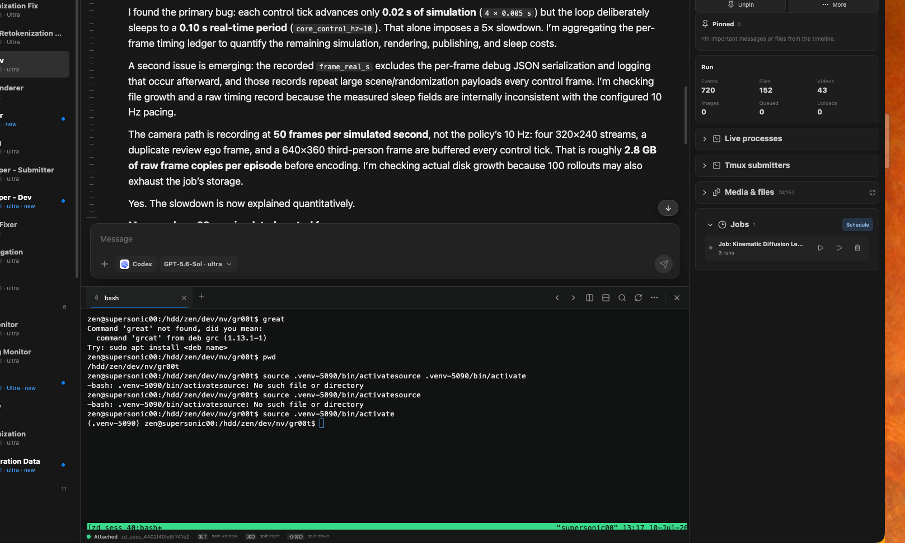

Chats, jobs, files, and terminals remain attached to the same research thread.
A control room for agent work
AgentsDock
Claude and Codex, together in one self-hosted workspace built for research, long-running jobs, and the files that come out of them.
Private preview · Your agents and data stay on your server.
Claude Code
Codex CLI
Persistent tmux
Rich media
For research and more
One place for the conversation, the computation, and the result.
AgentsDock keeps long-running agent work legible. Follow the reasoning without drowning in tool output, inspect the live terminal, and keep every video, image, file, and scheduled run attached to the right chat.

Play videos, inspect image grids, download files, and drag artifacts into your next workflow.
Open the chat’s persistent tmux workspace without leaving the conversation.
The useful parts, connected
Built for work that takes longer than one answer.
Claude + Codex
Choose the right backend, model, and reasoning level for each chat without splitting your work across apps.
Research-ready timelines
Compact reasoning traces, searchable history, readable markdown, code diffs, and a navigator for very long threads.
Videos that belong in chat
Preview media as it arrives, open full players, browse files in a dense grid, and download or drag them anywhere.
Jobs, queues, and handoffs
Schedule recurring work, steer queued turns, and create an LLM-generated digest that carries context into another agent.
Persistent terminals
Every chat gets a durable tmux workspace. Reopen it later and continue exactly where the terminal left off.
Files stay first-class
Pin important artifacts, search across active histories, and keep outputs organized with folders and chat-level media views.
Fully self-hosted
The app is remote. The control stays yours.
Run the lightweight AgentsDock server beside Claude Code and Codex CLI. The desktop app connects over your network or Tailscale, while source code, credentials, chat history, terminals, and large artifacts remain on infrastructure you control.
View the server on GitHubMac or LinuxAgentsDockChat · Media · Terminal
Encrypted network→
Your machineAgentsDock ServerClaude CLI · Codex CLI · tmux
A better research loop
Ask. Run. Inspect. Hand off.
- 1Start in context
Choose Claude or Codex and point the chat at the right working directory.
- 2Let work continue
Queue follow-ups, schedule checks, and watch the active state without interrupting the agent.
- 3Review the evidence
Open code changes, media, files, live processes, and the attached terminal.
- 4Carry it forward
Create a concise digest and send the important context into the next chat.
Desktop preview
Bring your agents into the Dock.
Install the desktop client, connect it to your AgentsDock server, and keep Claude and Codex available from every machine you use.